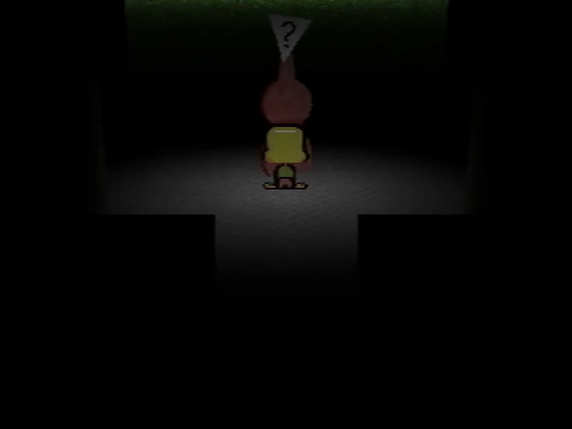

Tool room
This article's name is conjectural, and determined from a non-canon description of its appearance or purpose. Its contents refer to something that has no verified name in Petscop's canon.

The tool room is a location under the Newmaker Plane, located to the left from the upper path out of the grave room. It is most notably where the red tool can be found.
Locations
Exterior
The exterior of the entrance to the tool room has a dark, animated image. Inside the image, two shapes in yellow and red have a few frames of animation of connecting and disconnecting. These shapes are later seen on the box of the Accident board game.
Interior hall
The interior hall area of the tool room has a few potted plants, along with illegible notes and drawings of blue tools on the walls.
Red tool
- Main article: Red tool
A large red tool stands upright in the far room. The player can interact with the red tool to ask it questions.
Sometimes, the tool turns pink and behaves differently than it normally does.
Screen
If the player walks behind the tool, they can interact with a screen to observe the windmill. The view of the screen is based on the position of a camera on top of the Newmaker Plane.
While Marvin is playing during Petscop 20, the camera moved be moved up and down, and turned horizontally. A symbol block can be found in the tool room by rotating the camera to face the opposite direction.
")
{kind=link}
{kind=link}
{kind=link}
{kind=link}
{kind=link}
{kind=link}
{kind=link}
{kind=link}
{kind=link}
{kind=link}
Theories
The black camera may be analogous to a player being a shadow monster man, which is what enables it to see the windmill while it is in this state. It only turns red in Petscop 6 after the windmill disappears from the screen.
| Gift Plane | Gift Plane · Even Care · Odd Care · Work Zone |
|---|---|
| Newmaker Plane | Newmaker Plane · Office · Grave room · Tool room · Quitter's Room · Child Library · Windmill · Party room · House · School |